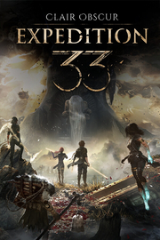

Clair Obscur: Expedition 33
Detalles
|  | |
| Tiempo de juego | No Jugado |
| Última actividad | Nunca |
| Añadido | 4/27/2025 21:16:29 |
| Modificado | 4/27/2025 21:17:46 |
| Estado de finalización | Not Played |
| Librería | Playnite |
| Fuente | 4TB TANK |
| Plataforma | PC (Windows) |
| Fecha de lanzamiento | |
| Puntuación de la Comunidad | 91 |
| Puntuación de la Crítica | 90 |
| Puntuación de usuario | |
| Género | Acción Rol |
| Desarrollador | Sandfall Interactive |
| Editor | Kepler Interactive |
| Característica | Cloud Saves Compat. Total Con Mando Logros De Préstamo Familiar Un Jugador |
| Enlaces | Punto de encuentro Discusiones Guías Noticias Página de la tienda PCGamingWiki Logros |
| Tag | 3D Acción Aventura Buena trama Combate por turnos Exploración Fantasía Fantasía oscura Mitos y leyendas Narración Personalización de personajes Posapocalípticos Protagonista femenina Realistas Rol Rol de acción Rol en grupo Rol japonés Tipo «Dark Souls» Un jugador |
Descripción


Una vez al año, la Peintresse se despierta y pinta un número en el Monolito. Un número maldito. Todas las personas de esa edad se convierten de pronto en humo, esfumándose en el aire. Año tras año, el número baja y, con él, nuestras filas acaban borradas. Mañana, se despertará y pintará el 33. Y, mañana, nosotros partiremos en nuestra última misión: destruir a la Peintresse para que no vuelva a pintar la muerte nunca más.
Somos la expedición 33.
Clair Obscur: Expedition 33 es un revolucionario juego de rol por turnos con mecánicas en tiempo real únicas que hacen las batallas más inmersivas y adictivas de lo que jamás hayas visto. Explora un mundo de fantasía inspirado por la Francia de la Belle Époque en el que te enfrentarás a enemigos devastadores.


En esta evolución de los JRPG, el combate por turnos cobra una nueva vida a través de las acciones en tiempo real. Crea configuraciones únicas para tus expedicionarios que se adapten a tu estilo de juego en función de su equipo, atributos, habilidades y sinergias entre personajes. Vive los combates de forma más activa: esquiva, bloquea y contraataca en tiempo real, encadena combos dominando los ritmos de ataque y ataca los puntos débiles de tus enemigos con un sistema de apuntado libre.


A Gustave, Maelle y el resto de expedicionarios solo les queda un año de vida; únete a ellos y embarcaos en una misión a la desesperada para detener el ciclo de muerte de la Peintresse. Sigue el rastro de las expediciones previas y descubre cuál fue su destino. Conoce a los miembros de la expedición 33 mientras ellos aprenden a cooperar con todo en su contra.


Explora un fascinante paraje habitado por adversarios inimaginables. Vaga por imponentes paisajes, desde la isla de Visages hasta el campo de batalla olvidado, descubriendo secretos y misiones ocultas durante la travesía. Encuentra valiosos aliados en criaturas de leyenda y recluta a compañeros especiales, accede a nuevas formas de viaje y descubre zonas secretas en el mapa del mundo.
Experimenta el juego debut de Sandfall Interactive, desarrollado al completo en Unreal Engine 5 con gráficos despampanantes y una banda sonora conmovedora.